
<!DOCTYPE html PUBLIC "-//W3C//DTD XHTML 1.0 Transitional//EN" "http://www.w3.org/TR/xhtml1/DTD/xhtml1-transitional.dtd">
<html xmlns="http://www.w3.org/1999/xhtml">
<head>
<meta http-equiv="Content-Type" content="text/html; charset=utf-8" />
<title>Automatic Generation of Video Navigation from Google Street View Data with Car Detection and Inpainting</title>
<style type="text/css">
body {
	background-color: #CCC;
}
</style>
</head>

<body>
<h1 align="center">Stereoscopic image stippling</h1>
<h2 align="center"> Chuan-Kai Yang and Chien-Yu Hou</h2>
<h4 align="center">  Department of Information Management<br />
  National Taiwan University of Science and Technology<br />
  No. 43, Sec. 4, Keelung Road<br />
  Taipei, 106, Taiwan<br />
ckyang@cs.ntust.edu.tw, M10109115@mail.ntust.edu.tw</h4>
<h4 align="center">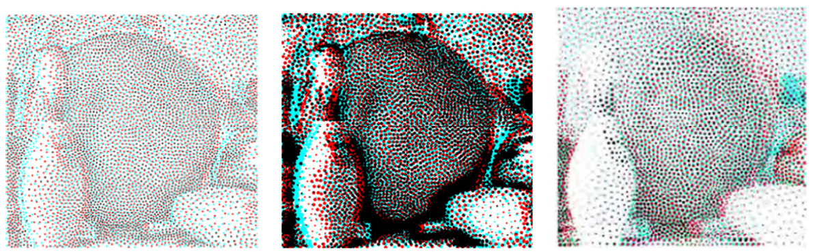</h4>

<h2>&nbsp;</h2>
<h2>[<a href="stereo_pdf/stereo_R2_complete.pdf">The complete paper</a>]</h2>
<h2>Abstract</h2>
<p>In recent years, stereoscopy has become quite popular and has attracted the attention frommany researchers, leading to numerous research studies on stereoscopic image processing, editing, and stylization. In particular, it is to our attention that, in terms of stereoscopic image stippling, one type of image stylization, there is still much room for further improvement over some existing approach, which could suffer from the effect of binocular rivalry. In this study, assuming that the input is an anaglyph or red–cyan image pair, we propose approaches to convert the input into two styles of stereoscopic image stippling, i.e., simple and hybrid, where the first one is with stipples of the same size, while the second one is with stipples of different sizes.Auser study has been conducted to justify the effectiveness of our proposed approaches and improvement over some existing method.<br />
  <strong>Keywords:</strong> Stereoscopic images, Stippling images, Disparity maps, Image segmentatin</p>
<h2>&nbsp;</h2>
<h2>Introduction</h2>
<p>Stereoscopy has become tremendously successful in recent years, and its wide range of applications ranging from movie industry to game industry have attracted many related researches. The basic idea of stereoscopy is tomake use of the disparities between two corresponding images, as our brain could combine such an image pair to gain a stereoscopic feeling of the reconstructed scene, as long as both images satisfy stereoconsistency, which means the disparities are mostly horizontal, and within a certain range. In terms of displaying technology, there are many types of stereoscopic display, such as polarization systems, color anaglyph systems, autostereoscopy systems, and in this study, we focus only on color anaglyph systems, although we believe many of our algorithms could be easily generalized or ported into other systems.</p>
<p align="center">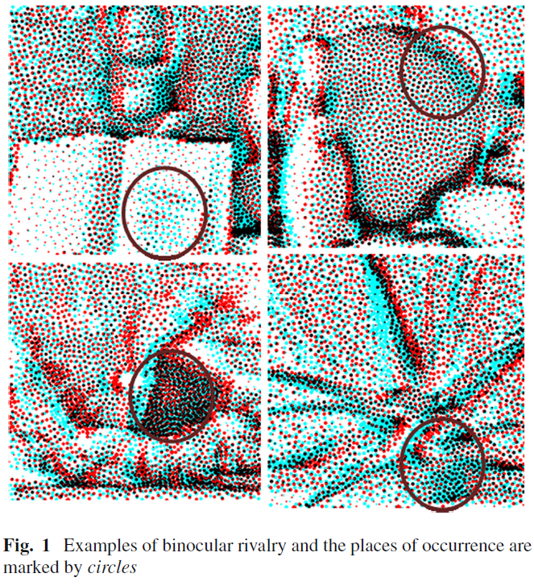</p>
<h2>&nbsp;</h2>
<h2>Stereoscopic image stippling</h2>
<h3>System flow</h3>
<p>Figure 2 illustrates the system flow of this work. First, a stereoscopic image pair, together with its corresponding disparity maps, if exist, forms the inputs to our system. The next step involves a preprocessing, where the disparity maps and occlusion maps are derived or processed for later use. The third step is to convert the left image of the input image pair into a stippling result. Based on the disparity maps, the right stippling can also be generated in the fourth step. As the inconsistency of parameters used in both stippling may lead to binocular rivalry, a mutual check is performed in the fifth step. Finally, the left and right stippling results are combined to generate the desired anaglyph image pair.</p>
<p align="center">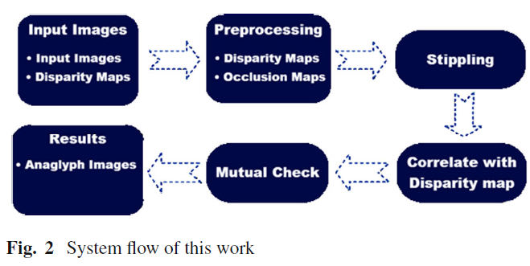</p>
<h3>&nbsp;</h3>
<h3>Preprocessing</h3>
<p><strong><em>Disparity map</em></strong></p>
<p>Regarding the first type of disparity maps,we first perform an image segmentation on both images of the input image pair based on EDISON [2], which in turn is based on mean shift [1] clustering and edge detection [10], and the results are shown in Fig. 3. The second step is to apply 8-connected morphological erosion and dilation to the portions in the images that need to be patched, denoted as Ω, as marked in black in Fig. 4a, in the order of an erosion followed by a dilation to derive the noise-like image, as shown in Fig. 4b, to become Ω . The resulting disparity map, after the patching, is shown in Fig. 4c. In other words, Fig. 4c shows the result after we inpaint Fig. 4a by focusing only on the regions shown in Fig. 4b.</p>
<p>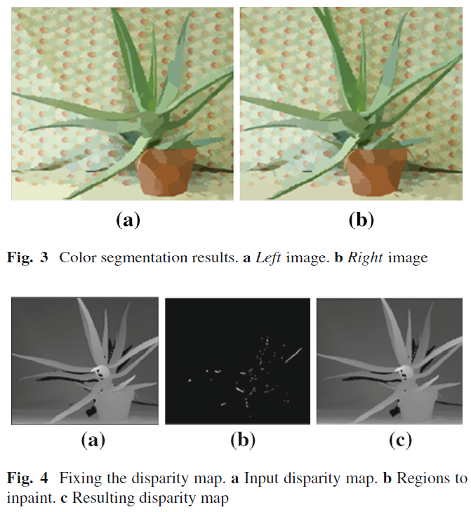</p>
<p>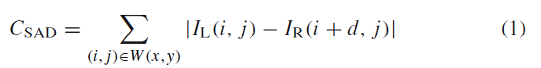</p>
<p>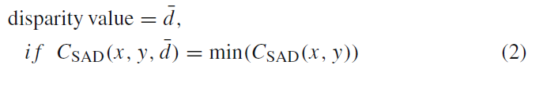</p>
<p>&nbsp;</p>
<p><strong><em>Occlusion map</em></strong></p>
<p>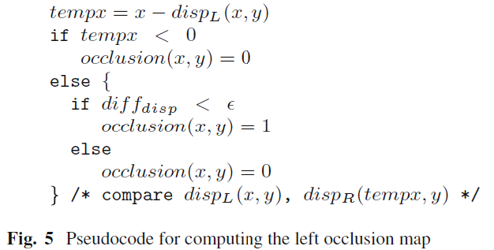</p>
<p>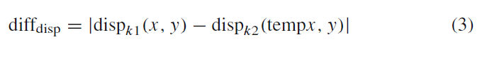</p>
<p>&nbsp;</p>
<h3>Stippling</h3>
<p>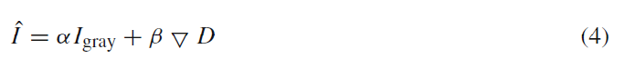</p>
<p>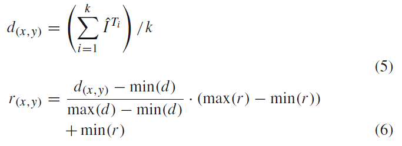</p>
<p>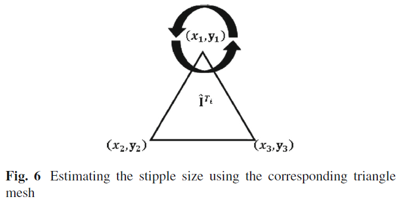</p>
<p>&nbsp;</p>
<h3>Stereoscopic stippling</h3>
<p>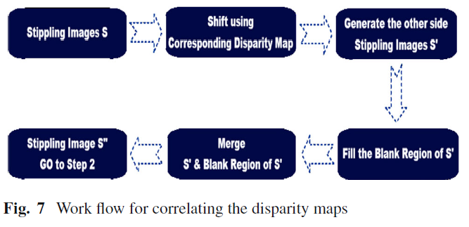</p>
<p>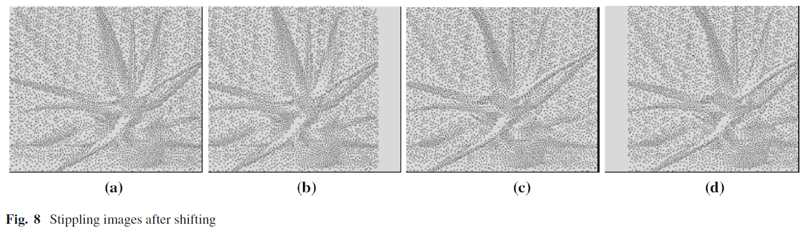</p>
<p>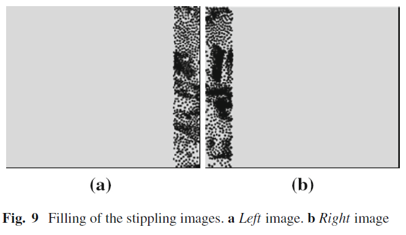</p>
<p>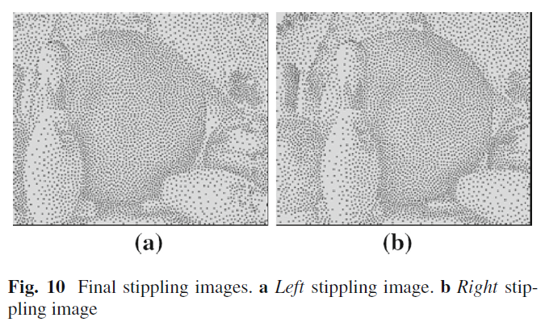</p>
<p>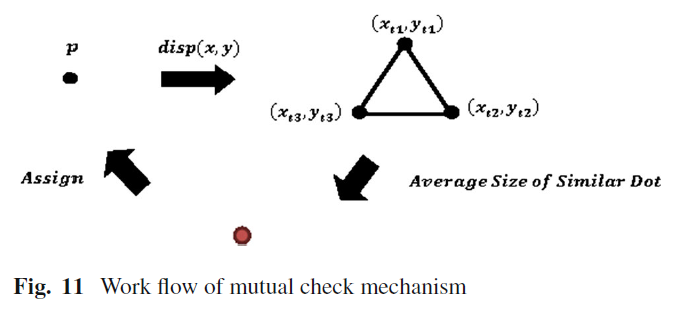</p>
<p>&nbsp;</p>
<h2>Results and evaluations</h2>
<p>To evaluate our proposed system, we have conducted a user study, to be described later, and there are totally 20 persons involved, and these persons are all students from the same department (informationmanagement), with their ages ranging from 20 to 30. The user study is to compare the results from our system, both simple and hybrid styles, with the one generated from work by Northam et al. [13]. In this user study, a user can choose the best of the three displayed stereoscopic stippling results. Note that to have a fair comparison, the corresponding images are randomly shuffled. Figure 12 shows the numerical result of this user study, where the vertical axis represents the threemethods selected, i.e., 3 means Northam et al. [13]’s method being selected, 2 means the simple style of ours being selected, and 1 means the hybrid style of ours being selected. The horizontal axis represents the person index. As can be seen from this figure, all the persons think at least one of ours, either simple or hybrid, is better than the one proposed by Northam et al. [13]. Also notice that most people like the simple style more than the hybrid style for its simplicity. Figure 13 shows one of the testing image sets for this user study,where (a) is the result of simple stylewith 5000 sample points, (b) the result of hybrid style with 5000 sample points, and (c) the result from Northam et al. [13] with a comparable sample point setting. Notice how our proposed approaches help better preserve the objects’ boundary in this comparison. 
  In terms of running time, it normally takes less than two 
  minutes to generate a result image with the aforementioned 
testing environment.</p>
<p>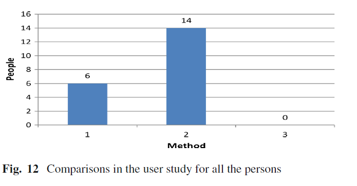</p>
<p>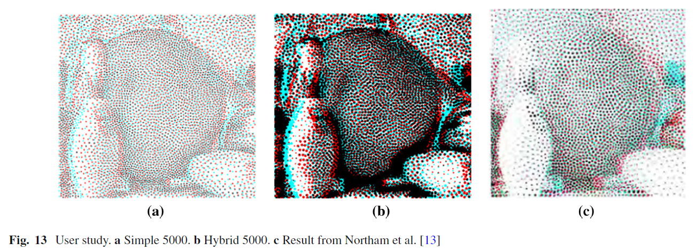</p>
<p>&nbsp;</p>
<h3>Acknowledgements</h3>
<p>This work was supported in part by the National 
  Science Council of Taiwan under the Grants NSC 101-2221-E-011-
  150-MY3, MOST 104-2218-E-001-002, MOST 104-2221-E-011-083-MY2, MOST 104-2218-E-011-006 and MOST 105-2218-E-001-001.</p>
<p>&nbsp;</p>
</body>
</html>
